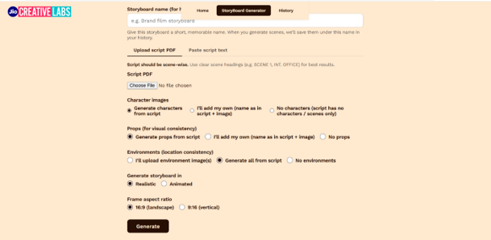
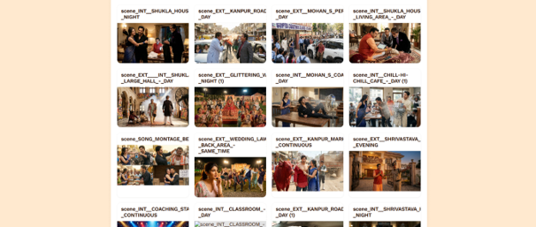

Selected Work
Brands, films, and everything between.

GENERATOR



＋
STORYBOARDAI Tool
←
→
01 / 09
SCROLL TO CONTINUE ↓
Confidential Feature Film
Royal Enfield
Independence
Celebrity Work
Other Brand Works
Proactive / Pitch Work
Music Video
AI VFX & Green-Screen
AI Storyboard Generator